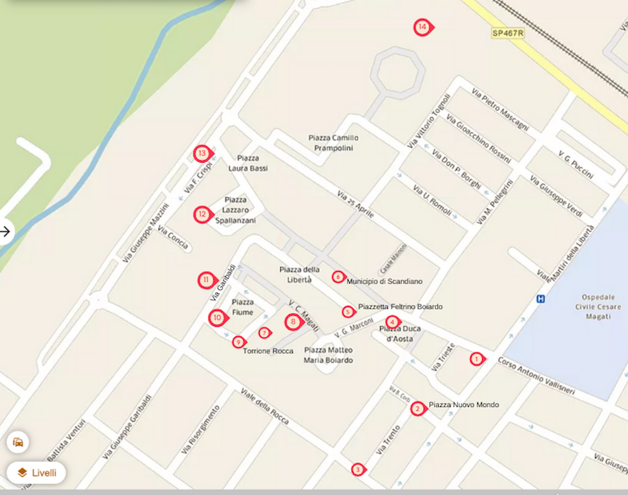

Benvenuto!
Vuoi visitare il sito oppure giocare con le domande sulle tappe?
VUOI VISITARE IL SITO
VUOI GIOCARE
Percorsi di Memoria - Fascismo e Resistenza a Scandiano
Home
Tappe
Info
Cookies
Log-in

TAPPE
1. Via Vallisneri 12
2. Piazza Nuovo Mondo
3. Via Trento 7
4. Piazza Duca d’Aosta, monumento ai caduti
5. Piazza Feltrino Boiardo
6. Via Vallisneri 6
7. Via Cesare Magati
8. Chiesa della Natività
9. Torrione della Rocca
10.Piazza Fiume
11. Via Garibaldi 8
12. Piazza Spallanzani 8
13. Via Francesco Crispi 1
14. Parco della Resistenza, monumento Munari